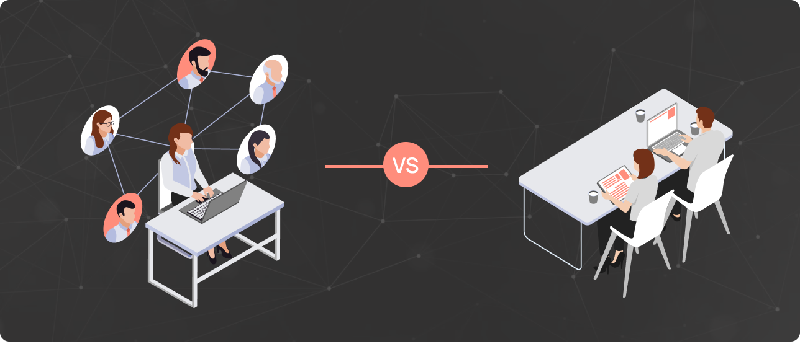

AI Team Building: Outsourced Vs In-House Teams

I. Introduction: The World of AI and the Importance of the Right Team
In today's modern business world, Artificial Intelligence (AI) has become a game-changer. From enhancing customer interactions to speeding up product development, AI is revolutionizing the way businesses operate. However, it's important to remember that to harness the true power of AI, one must have a team that is proficient and dedicated to leveraging its potential.This team could be an in-house team, a group of talented individuals who are part of your organization. Or it could be an outsourced team, a group of experts who you hire from a specialized firm. In this comprehensive blog post, we're going to dig deeper into the world of AI team building. We'll scrutinize the advantages and disadvantages of having in-house and outsourced teams, offer some real-life examples of companies that have triumphed in this aspect, and share valuable tips that can assist you in making the best decision for your organization.
II. In-House Teams: The Perks and Pitfalls
When it comes to choosing the right AI strategy for your business, the decision may seem complicated. You could build an in-house team, which offers great collaboration but can be expensive and time-consuming to develop. On the other hand, outsourcing could save money and provide a wider talent pool, but you might encounter issues such as communication barriers and data security concerns.Here's where Neural Leap makes things easier for you. We combine the benefits of both approaches, providing you with the best of both worlds. With us, you can access a diverse, global talent pool at a cost-effective rate, while still enjoying the close collaboration and focus you'd get from an in-house team.Choosing Neural Leap means you can focus on your business, while we take care of aligning your AI needs with the right resources and talent. We bring flexibility, cost-effectiveness, and access to top-tier AI specialists, making it simpler for businesses of all sizes to leverage AI solutions.Eager to harness the transformative potential of AI? It's time to leap forward. Connect with us and book a call with Neural Leap today, and together, we'll sculpt tailored solutions to match your unique needs and ambitions. Don't just anticipate the future - start shaping it with us today.
III. Pros and Cons of Outsourced Teams
One significant advantage of outsourcing AI team building is the potential for significant cost reduction. Building an in-house team involves substantial overhead costs, including recruitment, salaries, benefits, workspace, and equipment. By contrast, outsourcing to regions with lower living costs can provide access to top-notch AI specialists at a more economical price. In addition, outsourcing allows for flexibility in scaling your operations up or down according to project requirements, further enhancing cost-effectiveness.However, outsourcing is not without its challenges. Communication can be a hurdle, especially when dealing with different time zones and cultural nuances. Ensuring the quality of work and safeguarding intellectual property can also pose concerns. Careful selection of outsourcing partners and establishing clear expectations and communication protocols can mitigate these risks.Several successful companies have benefited from outsourcing their AI team building. IBM, a pioneer in the technology industry, is a prime example. They've outsourced parts of their AI development to teams across the globe, resulting in cost-effective innovation and a stronger competitive edge.In terms of cost considerations, besides the apparent salary savings, outsourcing can also reduce expenses related to continual training, as most outsourcing firms bear this responsibility. However, it's also vital to consider potential hidden costs like quality control, data security, and management overhead when calculating the total cost of outsourcing. It's worth investing time in finding a reliable outsourcing partner to ensure a favorable cost-quality balance.
IV. Making the Choice: In-House or Outsourced Teams
Choosing between building an in-house team or outsourcing your AI operations involves careful consideration of various factors. First, consider the cost. While in-house teams might require a more significant initial investment, including recruitment, training, and infrastructure costs, they could offer better long-term value, particularly for ongoing projects. On the other hand, outsourcing could be more cost-effective for short-term or one-off projects, or when specialized expertise is required.Next, consider the level of expertise required for your project. For highly specialized or cutting-edge AI projects, it may be challenging to quickly find and hire the necessary talent locally. Outsourcing can provide access to a global talent pool, ensuring you get the right skills for your project. However, if you plan to have ongoing AI projects, investing in building a skilled in-house team could be beneficial, as it allows for the consistent application of AI strategies across your operations.Quality and management are two other crucial factors to consider. In-house teams, being part of your organization, may have a better understanding of your company's values, goals, and expectations, leading to higher-quality work that aligns with your vision. Conversely, managing an outsourced team might pose some challenges, including communication gaps, cultural differences, and data security issues. However, these can be mitigated by choosing a reliable outsourcing partner and implementing robust management and communication systems.Evaluating the pros and cons of each option depends largely on your company's specific needs and circumstances. Consider factors such as the scope and duration of your AI projects, the availability of talent, your budget, and how integral AI is to your operations. A hybrid model, which combines in-house and outsourced teams, may also be an option. This approach allows you to have an in-house team for ongoing operations and strategic planning, supplemented by outsourced expertise for specialized projects or peak periods. Remember, the ultimate goal is to make the choice that delivers the most value and drives your company's success in leveraging AI technologies.
VIII. Conclusion:
When it comes to choosing the right AI strategy for your business, the decision may seem complicated. You could build an in-house team, which offers great collaboration but can be expensive and time-consuming to develop. On the other hand, outsourcing could save money and provide a wider talent pool, but you might encounter issues such as communication barriers and data security concerns.Here's where Neural Leap makes things easier for you. We combine the benefits of both approaches, providing you with the best of both worlds. With us, you can access a diverse, global talent pool at a cost-effective rate, while still enjoying the close collaboration and focus you'd get from an in-house team.Choosing Neural Leap means you can focus on your business, while we take care of aligning your AI needs with the right resources and talent. We bring flexibility, cost-effectiveness, and access to top-tier AI specialists, making it simpler for businesses of all sizes to leverage AI solutions.Eager to harness the transformative potential of AI? It's time to leap forward. Connect with us and book a call with Neural Leap today, and together, we'll sculpt tailored solutions to match your unique needs and ambitions. Don't just anticipate the future - start shaping it with us today.